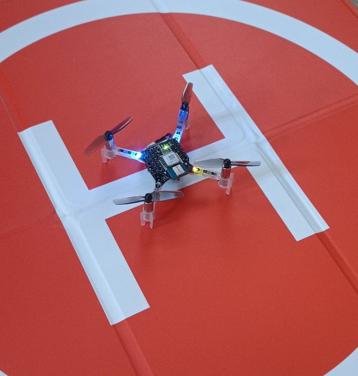
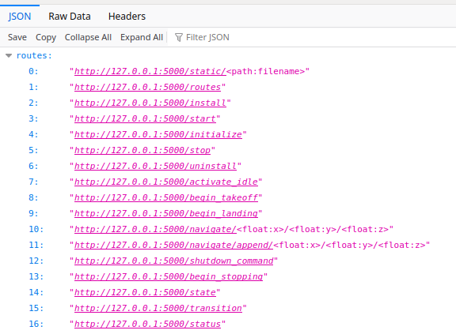

Getting Started with cf.PyControl
cf.PyControl is a high-level controller for Crazyflie drones with a web-based API.
At its core, drone behavior is governed by an internal state machine, which defines how the Crazyflie should act under various conditions. These state transitions and actions can be triggered externally via HTTP web endpoints, making the controller easy to integrate with other tools or platforms.
This page will guide you through installing and using cf.PyControl, which is provided in a reproducible and portable way using Docker containers.
Note: This page assumes that you know the radio URI of your Crazyflie drone.
- The default radio URI for real Crazyflie probably is
radio://0/80/2M/E7E7E7E7E7orradio://0/80/2M/E7E7E7E7E1.- If you are using a virtual Crazyflie, the default radio URI is
radio://0/80/2M/e7e7e7e701.
Note: Make sure you have at least the flow deck installed if you use a real Crazyflie drone.
Starting the Docker container
There are two Docker containers that provide the cf.PyControl web interface:
Standalone
You can start the cf.PyControl Docker container as follows:
$ cd ~/uniagent_ws/cps.asset.crazyflie/controller/cf.PyControl
$ sudo docker run --rm -it \
--device-cgroup-rule='c 189:* rmw' -v /run/udev:/run/udev:ro -v /dev:/dev \
--net=host --ipc=host --pid=host \
--env="DISPLAY" \
--volume /tmp/.X11-unix:/tmp/.X11-unix:rw \
cf-py-ctrl
This does not contain any simulation environment. Just the cf.PyControl web interface.
It also contains the cfclient tool to configure and control the Crazyflie.
Within sim_cf2 Gazebo simulation environment
The simulation asset featuring the sim_cf2 Gazebo simulation environment also includes cf.PyControl.
This assumes that you have installed the cf2_ros2_simu Docker container as explained in the previous page.
Start it like this:
$ cd ~/uniagent_ws/cps.asset.crazyflie/simulation/simulation-sim_cf2
$ sudo docker run --rm -it \
--device-cgroup-rule='c 189:* rmw' -v /run/udev:/run/udev:ro -v /dev:/dev \
--env ROS_DOMAIN_ID=30 \
--net=host --ipc=host --pid=host \
--env DISPLAY \
--volume /tmp/.X11-unix:/tmp/.X11-unix:rw \
cf2_ros2_simu
Place the Crazyflie on the Ground
Note: If you have a simulated Crazyflie, you can skip this step and proceed with the next section. Be sure to run a Crazyflie Firmware SITL Instance in the Docker container as described in Getting Started with Gazebo.
Place the Crazyflie securely on the ground and switch on the Crazyflie:

Start the Python Controller
Inside the Docker container execute the following command to start the Crazyflie controller:
# cd /home/user/dev_ws/libs/crazyflie-controller/bin
# ./cf.pycontrol-start.sh --uri radio://0/80/2M/E7E7E7E701 --port 5000 --wsendpoint --wsport 8765
# ./cf.pycontrol-start.sh --uri radio://0/80/2M/E7E7E7E702 --port 5001 --wsendpoint --wsport 8766 --sim
- It is the same command inside the same folder for the Standalone Docker container and the Docker container with the sim_cf2 Gazebo simulation environment.
- The ports are changed to avoid conflicts. The second variation uses the
--simflag, which enables the simulation mode.
Parameters
- Adjust the radio address with
--urias needed or configure it with the toolcfclient. - The output of the command reveals the URL of the webservice at the end:
--[installed] cflib.crtp.init_drivers() ...
--[installed] SIM_MODE = False
--[installed] URI of drone = radio://0/80/2M/E7E7E7E7E1
--[installed] Installing software packages now ...
...
--[active] Hardware checks completed.
--[active] The drone is ready to take commands.
--[active] Check available commands here:
--[active] http://0.0.0.0:5000/routes
- Adjust the webservice port with
--port [PORT_NUMBER]when running multiple instances of the controller. - Adjust the websocket port with
--wsendpoint --wsport [PORT_NUMBER]when running multiple instances of the controller. - Use the
--simflag to enable the simulation mode (to connect to a simulated Crazyflie).
Overview of the Actions of the Crazyflie
After opening the URL http://0.0.0.0:5000/routes in the browser, you will see all available commands of the Crazyflies internal state machine:

You can also use curl to inspect the available routes:
$ curl http://0.0.0.0:5000/routes
Note: As indicated by the
$sign in front of the curl command, we can communicate with the controller from the host system since the Docker container is connected to the host system via the--net=hostflag.
State machine
A picture of the state machine governing the Crazyflie behavior is depicted below:

Basic Commands
A detailed list of all commands is available in the respective README of the cf.PyControl repository.
First, activate the drone to release the software-based security lock:
$ curl -d {} http://127.0.0.1:5000/activate_idle
Execute the following command to take off. The drone take offs to a height of 0.5 meters (default internal value).
$ curl -d {} http://127.0.0.1:5000/begin_takeoff
The next command will navigate the drone to the position (1.0, 1.0, 0.5)
$ curl -d {} http://localhost:5000/navigate/1.0/1.0/0.5
Sequential Commands
The following commands will take off the drone and then land it again. The commands are executed sequentially:
$ curl -d {} http://127.0.0.1:5000/activate_idle && \
curl -d {} http://127.0.0.1:5000/begin_takeoff && \
curl -d {} http://127.0.0.1:5000/begin_landing
The internal state machine will take care of the transition between the states. If one request fails, the state machine will remain in the last working state.
The ground effect is visible when landing the tiny drone.
Monitoring the Crazyflie
- View the output of the controller in the terminal
- Connect to the websocket server to receive the output of the Crazyflie status such as position, velocity, and battery level.
Websocket Server
The websocket server is started with the --wsendpoint --wsport flag.
Therefore, open a new Docker container and connect to the websocket server:
$ cd ~/uniagent_ws/cps.asset.crazyflie/simulation/simulation-sim_cf2/test
$ chmod +x ./websocat
$ ./websocat ws://localhost:8765
Change the address to the port of the cf.PyControl websocket server.
The output will be similar to the following:
{"message": "Hello from server", "value": "[0.008031126111745834, 0.0044101448729634285, 0.016471806913614273]"}
{"message": "Hello from server", "value": "[0.008386319503188133, 0.004009794909507036, 0.017738545313477516]"}
{"message": "Hello from server", "value": "[0.008612623438239098, 0.0049172802828252316, 0.01688111387193203]"}
{"message": "Hello from server", "value": "[0.009156611748039722, 0.004726157523691654, 0.016807764768600464]"}
Troubleshooting
If you get connection errors such as "Too many packets lost":
--[starting] Connecting to drone now ...
Traceback (most recent call last):
File "/home/user/dev_ws/libs/crazyflie-controller/src/cf-ctrl-service.py", line 281, in <module>
with SyncCrazyflie(URI, cf=Crazyflie(rw_cache='./cache')) as scf:
File "/usr/local/lib/python3.10/dist-packages/cflib/crazyflie/syncCrazyflie.py", line 119, in __enter__
self.open_link()
File "/usr/local/lib/python3.10/dist-packages/cflib/crazyflie/syncCrazyflie.py", line 95, in open_link
raise Exception(self._error_message)
Exception: Too many packets lost
Try to:
- Restart the Crazyflie
- Unplug the Crazyradio PA from the USB port and plug it in again, then restart the Crazyflie
- Check the battery status with cfclient and recharge if necessary.
- When executed curl commands to communicate with the controller inside the Docker container, make sure to use the
--net=hostflag to connect to the host system.